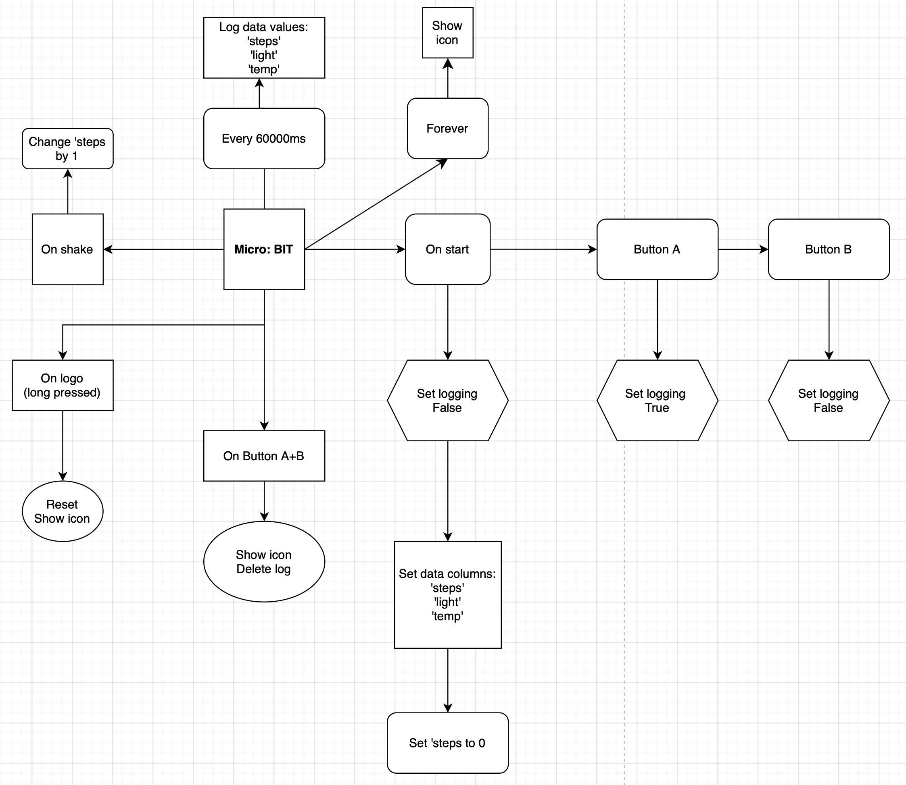

Plan and Design
First, I thought about all my requirements for my artefact and how will I meet them. The embedded system I chose was the Micro: BIT, it fit perfectly with my plan. I decided to create a step tracker with it, the end-user would have to put the Micro: BIT somewhere on their leg, preferably above the ankles.
The step tracker has three analogue inputs: the accelerometer, the light sensor, and the heat sensor, and one analogue output sound. The three analogue inputs will constantly log data every minute as long as logging is set to true. On start, the Micro: BIT sets logging to false. The end-user has the option to set logging to true with the click of button A. The end-user would click button A once they start their walk, while logging is set to true, it will log the steps taken by the end-user and also log the temperature outside and light level outside. Once the end-user is done with their walk, they would click button B to set logging to false so it the Micro: BIT won't log any irrelevant data.
I also included an analogue output: If the user presses button A+B it would play a short melody. I've included this in case if the end-user is feeling less motivated to keep going on their walk, they could play this melody in hopes of motivation.
At the end of their walk, the Micro: BIT would have logged all the data such as steps taken, temperature outside, and the light level outside. The end-user would be able to remove the device of their leg and connect it to a computer to see their data which consists of their steps, temperature, and light level and the time in seconds that have gone by.
Once the data has been logged, it gets stored as a csv file. I will be able to access that file with Python. I will be using the IDE Thonny to program in Python. I will be doing statistical analysis of the file finding the mean, median, mode, and max of each data, which consists of steps, temperature, and light level. This analysis will help me address my two 'what if' questions:
- "What if the end-user either reaches the goal, doesn't reach the goal, or surpasses the goal?"
- "Has the temperature and light level outside affected the end-user?"
I also included a flowchart of the Micro: BIT below:
